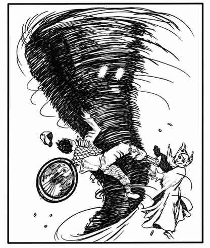

气元素 · Air Elemental
 |
|
气元素唯一的移动方式是飞行，也可以低于标示速度移动。在空中战斗时，命中概率 +1，每颗伤害骰另加 +2 点伤害。
奉命后，气元素可化作旋风：倒截圆锥，底部直径 2 寸、顶部直径 6 寸，高度以寸计，数值等于该气元素的生命骰数，即 8、12 或 16 寸。若上方障碍使其无法达到完整高度，旋风的力量减半。完整旋风持续 1 个近战轮，会卷走并杀死所有生命骰少于 3 颗的生物；未被直接杀死的非飞行生物受到 2–16 点伤害。形成或消散旋风都需要整整 1 回合。
气元素位面上存在一些有智慧的气元素，拥有超越上述召唤元素生物的特殊能力；其中最强大者为女王，她也具备某些魔法能力。